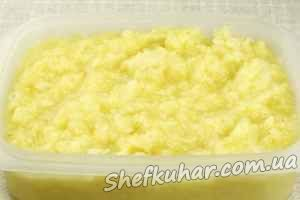

Лимонний сорбе
Інгредієнти: Лимон 1 шт. Банани 3 шт. Сік лимонний 600 мл Цукрова пудра 300 г.
Кулінарний рецепт лимонного сорбе.
Для приготування сорбе знадобиться лимон, 2-3 солодких банана, цукрова пудра, лимонний сік (або готовий лимонний нектар).
Лимон з шкіркою і очищені банани нарізати великими шматками.
У блендері подрібнити фрукти з цукровою пудрою.
Додати лимонний сік і ще раз все збити, додати, якщо необхідно до смаку банан або цукрову пудру.
Влити отриману масу в ємність і поставити в морозильну камеру на 2 години.
Сорбе діставати кожні 2 години і добре перемішувати ложкою, виробляти це до повного замерзання десерту.
Готовий сорбе подавати прикрасивши цедрою лимона, лайма чи кубиками банана.

Смачного!